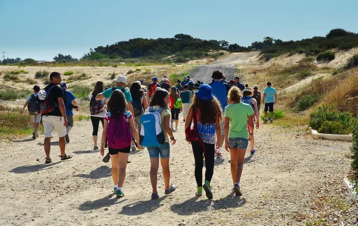

Nos actions
Sports

Notre association fait du sport un socle permettant a de nembreuses personnes ,essentiellement la jeunesse,de profiter de cette activité dans un carde bien approprié. les activités sportives sont financées par notre association,en comptant sur les personnes adhérentes ,les sponsors,les bénévols et tout nos partenaires sociaux, n'oublions pas l'engagement de la commune et les elus de la région.
Actuellement, environ 500 personnes profitent de cette activité, 40% de sexe feminin et de toute age.
L'association se fixe l'objectif de faire profiter de cette activité a un maximum de personnes,et de faire du sport une action social dans un cadre structuré et bien dynamique ...
Essentiellement collectifs,et de tout genre ,notre association appuie tout idée innovante, toute approche de ce que bien structurer notre activités sportive, qui tirera profit a tout ceux qui le souhaite .On est ouvert a tout ,rejoingnez-nous pour vivre cette éxpérience ensemble!
Ateliers

Peinture, sculpture , gravure ,des ateliers poterie voire meme d'autre spécialitées telle que la calligraphie arabes ,française et bien d'autres activités sont adoptées par notre association en partenariat avec des artistes mondials et des écoles spécialicées , une ouverture sur le monde artistique permet de faire profiter a tout ceux qui le souhaitent.
Cette activité permet a l'association de créer une richesse en vendant les produits réalisés dans des rendez-vous organisés au sein de l'association,ainsi que proposés nos produits dans des galéries.
L'objectif est de donner un sens a ce que font les participants , et bien appuyer le financement d'autres activités ,tel que de voyages au profit de la jeunesse ,création d'autres ateliers ,librairies...etc
Environement

Jardinage, création d'espace vert, action environnementale font partie de l'objectif de notre association, car à travers l'environnement qu'on puisse vivre sainnement et en harmonie avec la nature . Des cours de jardinage sont proposés par des spécialistes en la matière a travers notre association, aini que des flash infos sont proposés pour sensiblisés tout le monde au risque de réchauffement climatique qui mets en péril notre vie a ceux de tout les étres vivants. mettre a profit cette filière est synonyme de reduire l'effet néfaste sur notre écosystème et garantir la continuité de ce qui a été amorcer par nos congénères.Qu'attendez-vous pour nous rejoindre et nous épauler pour que notre action ne soit éssoufflé, que vous soyez près ou loin ,si on veut ,on peut ...
Voyages

Un voyage, une excursion, ou une petite échappatoire, on peut réussir ça ensemble,ca aussi fait partie de nos objectifs ,car ça n'a jamais été facile de tout faire tout seul,si ce n'est qu'à travers nos actions sociales qu'on peut réaliser ce petit privilège. le voyage est une culture ,et la culture c'est notre socle ,ne nous remércions jamais assez nos adhérents,nos partenaires sociaux,nos acteurs et bénévols pour leur engagement .
Des voyages culturels, des voyages touristiques ,nationals ou a l'international sont concrétisent au seinn de notre association, surtout pour la jeunesse dans de but de découvrir d'autres horizons,et d'autres oportunités qui ne se réalisent qu'à travers cette filière . de nouvelles idées à explorer! nouvelle approche de voyager,ou mmeme une autre manière de définir le voyage! on prend tout ,on construit tout et on éxécute ensembe. Alors fesons de notre éxistence un voyage.
Scolaire

L'éducation est aussi fait partie de notre objectif,et est considérée comme primordiale,car nombreux ceux qui sont dans le besoin d'appuie scolaire, de coup de pouce dans leurs parcours. c'est dans ce sens que notre association propose un bon nombre de cours, dans presque toutes les matières académiques. Notre association a pu réaliser cette altérnative,à travers un bon corps enseignant ,des organismes pédagogiques et nos partenaires sociaux, qui n'hésite pas une seconde a se positionner dans les premiers ronds de notre démarche au profit de tout ceux qui sont besoin.
Actuellement, notre association dispose de deux classes équipées de tout outils ,ainsi que d'équipement pédagogiques, des ordinateurs, des chiases et des bureaux qui repondent a toute attente en terme d'apprentissage scolaire .
Environ 20 intervenant propose des cours divérsifiés au profit de notre jeunesse dans le but de répondre au besoin de notre action.
Des statistiques ont été réalisées ,et prouvent que cette activité est bien évidement bénéfique et indisponsable au sein de notre circuit ,ce qui honore l'association et tout les acteurs dans ce cadre .
Social

Le social aussi est notre objectif,car une association sans action social n'est pas compléte .Une action sociale comme aider nos congénères dans les aléas de la vie , proposer des services a ceux qui sont dans le besoin ,jardinages ,démarches administraives , véhiculer ,cuisiner ,faire des courses, ou toute autres choses pouvant aider a vivre dignement est une culture bien ancrer de le registre de ntre association. Ces démarches ne sont réalisables qu'a travers l'engagement de l'ensemble de nos adhérentes et adhérents,qui travaillent d'arrache_pied,et celui de nos partenaires sociaux et bénévols.